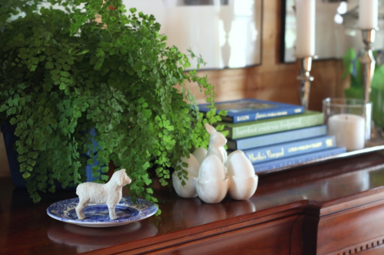
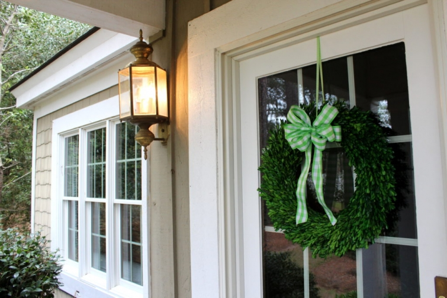
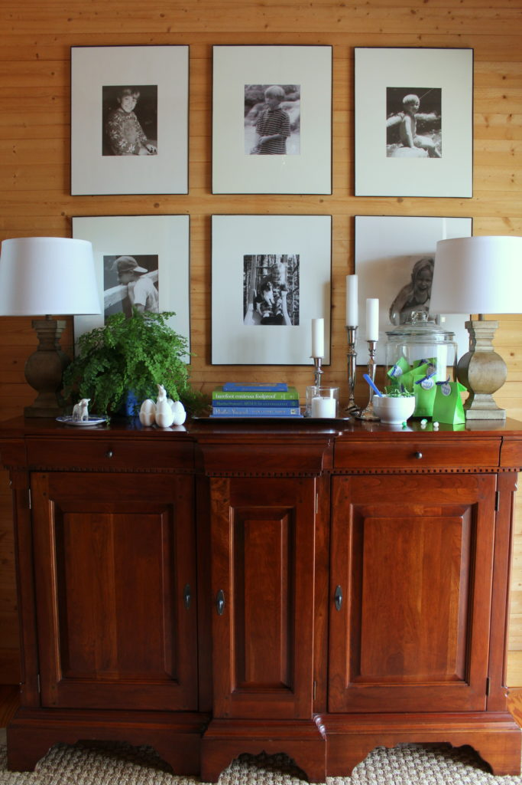

.png)
.PNG)
.PNG)
.PNG)
.PNG)
.PNG)
.JPG)
.JPG)
.PNG)
.PNG)



What gets your creativity going? What inspires you? Sometimes, for me, inspiration can come from the most unusual places. Take for example my senior year in college. Because my roommate was a resident assistant, my housing was in a teeny tiny room in a freshman dorm. I was completing my accounting degree and just beginning my classes for an education degree.
Getting from the business building on one side of Georgia Southern’s campus to the education building on the other side was like going between two different countries! The business building was near the freshmen boys’ dorm. The education building was near the lake. It was spring, and that made for a very pretty walk (or jog if I was running late. 🙂 )

One of my first education classes was Children’s Literature (aka Kiddie Lit. 🙂 ) After several years of being in courses that dealt with profits, losses, taxes, and all things financial, Kiddie Lit was a whole new world for me. No boring business books to read, but instead, beautifully illustrated literature that allowed my head and heart to go places.

One of those books from Kiddie Lit was Keep Running Allen by Clyde Robert Bulla. It is out of print now, but you can still occasionally find used copies on Amazon.

Keep Running, Allen!
(My Amazon Affiliate link.)

I’ll tell you about the sweet story in a minute, but first I want to talk about the decorating inspiration that came from that little book…yes decorating inspiration. 🙂
 The artwork in the book was done by Satomi Ichikawa, a Japanese storyteller and artist who lives in Paris. Keep Running Allen was filled with her gorgeous watercolors of children running through various scenes. There were beautiful blues and greens throughout the story and especially vibrant ones near the end.
The artwork in the book was done by Satomi Ichikawa, a Japanese storyteller and artist who lives in Paris. Keep Running Allen was filled with her gorgeous watercolors of children running through various scenes. There were beautiful blues and greens throughout the story and especially vibrant ones near the end.

It was those bright blues and greens that made me want to change the red and ivory quilts and accessories to blue and green everything in that teeny tiny dorm room that spring. It didn’t take much to change the room because every piece of furniture was built in, but I did what I could – even down to the makeup displayed in a basket on my desk. (Do any of you remember all the bright blue things Revlon used to make for their Charlie fragrance line?)

Anyway, as I was thinking about decorating for spring this year, I remembered that book and that long ago course in children’s literature, and I decided that once again I would revisit that blue and green color scheme that seemed so fresh to me decades ago. After all, it is spring!

I swapped the wicker chairs in the playroom and the family room to bring in a bit more green there, and I did the same with a couple of baskets.

We already had out the green plaid pillows from St. Patrick’s Day and my mother’s birthday party.

The red geraniums that were on the mantel and elsewhere in the house went to live outside, and a few fresh green maidenhair ferns took their place inside. And of course bunnies were a logical thing to add for spring decorating. 🙂

The other throw pillows, the ones in that vibrant blue that I love, were old ones from our daughter’s former apartment. Blue books on the coffee table and a bowl of blue and green wrapped candies finish off the color scheme for the family room.

And of course some other rooms in our home here are now dressed in blue and green for spring. I’ll share those with you next time, but right now I want to finish telling you about Keep Running Allen – the story part of it.

(I edited out the power line that runs through there so you’d notice the sky and trees. 🙂 )
The main character is Allen, a little boy who had to run and run and run just to keep up with his older brothers and sisters. The story takes you through a day with all of them stopping to do numerous activities in a variety of places. Near the end of the book, Allen gives up on being able to keep up with them. He stops chasing after his siblings and just lies down on a grassy hill…happy to take in his view of the sky and all of nature around him. Of course his brothers and sisters notice he is no longer running behind them and come back to find him there in the grass. They too decide to stop being so busy and just lie down beside him. They find being there is as wonderful – if not more so – as hastily going from one activity to the next.
 (The sky this morning…totally unfiltered.)
(The sky this morning…totally unfiltered.)
Since then I have run across an old copy of that book. The colors in the illustrations do not seem as vibrant to me as they once did. Perhaps the pages have faded over time. I’m sure back in that spring semester years ago, I latched onto the psychological lesson from the book as well… changing majors…not running in the business world anymore…just wanting to stop and slow down to take in the beauty of things around me.

I took the photo above outside this morning. It is totally unfiltered. The exterior of our home is one big mess and is being worked on, and that entire end wall is going to be replaced very soon. But overlook that mess. Look at that amazing blue blue sky! Sometimes we just have to slow down, look beyond the mess, and appreciate the beauty that we have been given. Right? 🙂
So what does inspire you? Children’s literature? A shop window display? Art?
We’d love if you would share with us in the comments below.

Until next time…
(when there will be more blue and green for you!)


.PNG)
Your blog is always such a source of inspiration — you always make me think more about the importance of details. I also soak up inspiration from Pinterest, antique shops and flea markets.
I love the blue and green together — so fresh and just a little different!
——————————————————————-
Thank you Kim. 🙂 I soak up a lot from Pinterest as well! (Sometimes it is overwhelming though!)
Glad you liked this spring’s color scheme. 🙂
Kelly
Oh my, Charlie and Kiddie Lit!!!! That sure brought back a memory or two!!! I tooo get inspiration from children’s literature!! I particularly love the watercolors of Jerry Pinkney. Your home always looks lovely no matter how you arrange it. I sure wish I had your decorating energy. Happy Spring!!!
———————————————————————
Aren’t children’s books just wonderful?! I met Jerry Pinkney at a conference I attended a number of years ago and got him to autograph my copy of The Little Match Girl. His artwork is beautiful! Happy Spring to you too Linda!
Kelly
Like you, Kelly, I taught first grade for many years. I loved teaching my students to read and I absolutely enjoyed the many, many books I read with them. My very favorite was, and still is, Miss Rumphius by Barbara Cooney. Readers of Miss Rumphius were encouraged to do something to make the world more beautiful. You do that with your home decorating and your blog. Thank you!
P. S. Blue and green is my favorite color combination. I used to do my classroom bulletin boards in blue paper with a green and white dot border. It felt peaceful and relaxed.
—————————————————————-
Miss Rumphius was a beautiful book! I loved reading that one aloud too Mary. Thank you for your sweet compliment about my making the world a better place. 🙂 I fondly remember doing bulletin boards, and I bet your blue and green ones did provide a peaceful atmosphere for your classroom.
Thank you for reading and for leaving your thoughtful comment. 🙂
Kelly
Hi Kelly: I like this post and the moral of the story. Sometimes, we are in such a hurry that we don’t take time to look around and appreciate what we have. Inspiration is all around me, whether it be a blog, a book I’m reading, or people in my life.
Cindy
——————————————————————
You so right on both counts Cindy. We often need to slow down to appreciate all that we have, and yes, inspiration is all around us if we just take the time to look!
Kelly
So, I have been pondering that question of what/who inspires me today. I am inspired by lots of people and things….YOU have really inspired me with your entertaining and decorating ideas but especially your handwriting and your chalkboards. (Katrina says I have to send photos of the Tasting Buffet to you and I will.) I am also inspired by God, things in nature – especially things that are coastal, my family, my friends, and by colors. Pinterest inspires me as does a glass of wine with DiAnne! (We have had some great ideas that were wine-inspired.) I love the blue and green in your post…Josie’s favorites! I am going to copy the bunny in the jar. I am looking forward to Part 2! Thanks for inspiring all of us. Kelly!!! (I loved Kitty Lit in college too!)
———————————————————————
Kathy you are a sponge soaking up inspiration wherever you can find it! I think that seems to be a common trait among teachers…which is a good thing. 🙂 Go right ahead and copy the bunny in the jar. I know yours will turn out cute!
Kelly
I am certainly inspired by nature – the changes in the seasons, the storms as they roll in. But, I am also inspired by your creativeness, your back porch, and Martha Stewart’s organization, gardens, and cooking. Please be careful today! I am not liking what I see on the radar for your neck of the woods.
——————————————————————
It sounds like you soak up inspiration from many places Lori. You live with your eyes wide open…a wonderful thing to do! Glad I can provide some of that inspiration for you. We came through the storms at our house just fine…but my brother in law’s home had a huge oak thrown into it…not good. 🙁
Kelly
Kelly, I visit your blog because it is inspiring! It’s wholesome all around! Your home is cozy, well decorated and classic. I love how you changed your colour scheme to blue and green. What kind of pen do you use to write Happy Easter on the gift bags?
For inspiration, I enjoy reading, cooking, decorating, travelling and now I’m baking sourdough bread and making kefir milk! Nature is inspiring (come on Spring! waiting for you)!!!
By the way did you know that Mary Kay Andrews has a new book called The Beach House Cookbook.
——————————————————————–
Anita, you find inspiration everywhere! A sign of a truly creative person! Glad I can help to fuel that creativity here.
As far as writing on the gift bags, it was simply a Crayola marker that I filled in thick in some places and thin in others.
Yes, I am excited to get Mary Kay Andrew’s cookbook! Looks like it will be a good one. Not only will the recipes be good, but I believe a lot of it was photographed at her houses on Tybee Island, and I love them!
Kelly
I taught Children’s Literature for 35 years in a medium size university in east central OK before retiring 3 years ago. I would have taught the class for free!!! Children’s Literature inspires all that I do. In fact, heaven for me would be “living” in the children’s section of a library or really great bookstore.
Happy Reading,
Becky in Oklahoma
where It hailed in our town and came a snowstorm in the Panhandle
———————————————————————
How wonderful that you got to teach the class!! I love that! And I totally get what you mean about wanting to live in the children’s book section. 🙂
Crazy crazy weather this spring. I know Oklahoma gets more than its share of storms and tornadoes. Stay safe Becky.
Kelly
First, I love the green and blue in your home. So calming and spring like. Second, you my cyber-friend inspire me – I’m not one to be able to look at a blank canvas (room) and have a vision of what to paint or how to decorate. I enjoy seeing what others create and then I get inspired to look closer at my canvas and my choices to decorate with.
I noticed the picture of your house there is a cross on what appears to be your garage. Perfect!
———————————————————————–
Thank you Julia! I am glad that you can find inspiration whenever you look around at what others have done (including me. 🙂 ) There is a lot of inspiration to be found out there.
Kelly
I love the blue and green color scheme! I haven’t heard the phrase “kiddie lit” in a lot of years but I was an education major too. I am so glad I have grandchildren for lots of reasons but one of them is that I can buy children’s books and enjoy them too! Happy Spring to you!
——————————————————————
Happy Spring to you too Debbie! You keep on enjoying reading to those grandchildren, and I look forward to the day that I can do the same. Read aloud was my favorite time at school. 🙂
Kelly
YOU inspire me!
I LOVE when you share your home decorated for the next party or season change. Your home just feels so welcoming…don’t get me wrong I surf Pinterest and oogle at all the white kitchens and white everywhere…but I look around my home (and Yours) and that’s where the comfort lies.
You keep me coming back girl!!!
—————————————————————-
Oh my goodness! What a sweet sweet compliment! Thank you so very much Shelley. 🙂
Kelly
Nature inspires me the most.. I do pause, look around and try to smile in all that chaos. When I’ll start planning with my home, I hope I am inspired as you are. By the way, wonderful spring decor…!! Thanks for sharing with us..!!
———————————————————————
Nature can most definitely be amazing inspiration! Thank you for the sweet words about the spring decorating, AND thank you for reading the post. 🙂
Hope you are having a good weekend!
Kelly
How’s the pup doing?
——————————————————————-
She is doing great, has gotten house broken and crate trained, and is growing super fast! 🙂
Kelly
I love the soft greens and true blues in your living room. It, and you, are an inspiration for the season and everyday. This post was part 1, I look forward to more. I miss not seeing posts from you more often.
———————————————————————-
Thank you for the compliments Linda. I am glad you like the colors in the spring decorating this season!
Kelly
Miss Kelly, you are always a breath of fresh air! I love the soft greens and true blues in your living room. It looks so full of spring and today with temps in the 30s and much needed rain falling down out of gray skies, it was just the inspiration I needed.
——————————————————————–
Well I am so glad I can be that for you Peggy! Hope you are having blue skies this weekend (and much warmer temperatures!) 🙂
Kelly
Hi Kelly. Your freshly decorated home is lovely as always and it was interesting to read about how you were so influenced by a book’s illustrations. I’ve never thought about decorating based on a book before. I can’t tell you what an influence you have made on me. Your attention to detail, colours, and themes is quite special and your gorgeous handwriting is highly enviable! Thank you for the happiness you send us all.
———————————————————————-
Wow! Thank you for such a kind compliment Tricia. I appreciate it and you – for reading and always leaving your wonderful comments!
Kelly
Ah, Kiddie Lit!! I love children’s books!!! I should have been a librarian….but loved being 5k teacher!!!
——————————————————————-
Aren’t they just the best books?! I bet you got to read a whole bunch of them being a 5K teacher though – even if you weren’t a librarian (or media specialist as they are called here.)
Kelly
First, your house looks like spring itself. I love the blue and green and I can’t wait to see the rest of your latest transformation. Your attention to details is awesome!
I also love children’s literature, largely because the wisdom is so honest and direct.
I actually think store windows and displays inspire me. Last year my husband and I were in London and I was totally smitten with Fortnum and Mason’s riot of flowers (it was spring). I tried hard to capture the images on my camera, but the glass just got in the way.However, I have not forgotten it.
———————————————————————-
Thank you so much Janet! Like you, I have always found store windows and displays inspirational. I could stand in awe in just the Williams Sonoma store! How fun to visit London. I would think their shop windows would be fabulous!
Kelly
Love your source of inspiration! I too share your love of books, blue and green. Oh, and especially red too! Decorating inspiration for me comes from the most unusual sources. But as long as it inspires, then so be it. Really enjoyed your inspirational decorating story.
——————————————————————–
Amen Amanda! As long as we can find inspiration from it, then it’s good. Glad you enjoyed the story in the post!
Kelly
I’m always inspired by nature. Plants, rocks, the ground itself, animals, trees, water and sky. Lately I’m inspired by the variety of mosses growing on our property, and a HUGE granite rock covered in moss. The moss is dainty but tough, and the texture it provides has my camera working to capture it. I only wish I knew how to use the myriad of settings so I could do a better job! My grandson and I wandered the property on Sunday afternoon scouting for interesting rocks, and I had to show him the mosses, trying to get him to focus on them. He was more interested in the rocks, but I hope he absorbed that it was important to take a closer look at his surroundings.
———————————————————————
What a great lesson to be teaching him Marianne! Nature provides so much inspiration if we just look for it!
Kelly
I love the blue skies, the green plants and trees, and all the blooms out now. Seems one can hardly go wrong decorating with “nature colors!” Hard to believe we are supposed to get incredibly severe storms here in N GA tomorrow….hope they miss you! Thanks for sharing the precious story with such a great message, and your fresh new wonderful look. I always marvel how you make such a huge impact by switching just a few things!
———————————————————————–
Hi Jae! Nature colors always seem to work best in all the seasons; don’t they? I hope the storms did not do any damage to your property. This has been a wild week of weather here in Georgia!
Kelly
I loved kiddie lit! And still do. I used goldilocks and the 3 bears to decorate our cabin in the big woods. (Nod to another book there). And at home my grand boys room was decorated with Where the Wild Things Are and the girls is the Princess and the Pea. We’ve even named the grands playhouse “Storybook Cottage”. So, I think children’s books have a big influence on my decorating. 😀 And you provide a lot of inspiration too. ❤️
——————————————————————–
Yes, I would say that Children’s Literature has had a BIG influence on your decorating Sue!! What great ideas for the spaces for your grandchildren. Love it!
Kelly
I came across a children’s book at the library when my daughter was small. I loved the pictures so much I bought it. The Maggie B by Irene Haas.
———————————————————————
The artwork in children’s literature can be soooo amazing! Glad you found one that spoke to you Karol. 🙂
Kelly
Loved the story. I, too, took Children’s Lit and absolutely loved it. I don’t recall as a child being read to or having a lot of books, so it was great to read 100 sweet children’s books that semester. My inspiration took a different path, however as I was inspired by food!! I especially remember Laura Ingalls Wilder’s Farmer Boy, about Alonzo’s family. What a revelation in discovering Mama stacked all those pancakes but not before slathering them with butter and syrup. It wasn’t just pancakes for breakfast, but also fried chicken, too! Often breakfast was finished off with a piece of pie! We can’t eat that way today since we aren’t behind a horse struggling with a plow, but when I do make pancakes, I give them some butter and syrup love just like Mama.
——————————————————————-
I am glad you enjoyed the story Julie. And what a fabulous thing to take away from Children’s Lit…food! I love it! And yes, we can’t eat like that today, but I think it is fine from time to time. For some reason I am hungry after reading your comment. LOL
Kelly
Kelly’ you have made me like red because you have gingham and do it so well, but blues and green are my colors. I am totally in love with what you have done. Seriously, I LOVE it!
Oh, the pleasures of keeping up a home. I had my day yesterday with the rain. We are having to spend lots of ,only for repairs. Retirement was supposed to be fun…writing checks for repairs is not:(
——————————————————————-
Oh goodness! Thank you Sandy! I am so sorry you are having to have repairs done on your home. We are right there with you working on our exterior. Not fun!
Kelly
Kelly, you inspire me…. to decorate seasonally, to organize, to travel and to cook (well nothing really inspires me to cook)!
Lots of movies inspire me… Meryl Streep’s bakery in “Its Complicated”, Ann Hathaway’s and Robert De Niro’s brownstones in “The Intern” and every room in Diane Keaton’s house in “Something’s Gotta Give”! Years ago the house in “Home Alone” inspired me.
I am a Huge fan of children’s literature. I had never heard of this book. I will definitely be on the look for it!
Have a great week enjoying those beautiful Georgia blue skies! We’re enjoying some Carolina blue our way🏀🏀🏀!!!
———————————————————————-
Congratulations on the basketball win!!! Our son and all his friends in Washington state were not exactly happy about it though.
I am so happy that I can help to provide inspiration to you. And yes to movie inspiration!!! Oh goodness. How many movies have I rewatched a time or two just to see the house?? 🙂
Hope you are enjoying your weekend Katrina!
Kelly
You do! Thank you for sharing! Several years ago I was decorating our guest bedrooms that were connected by a Jack & Jill bathroom. One room was our California Room (our daughter lives in Ca.) and the other room was a Colorado Room (our son lives in Colorado). I decided the bathroom would be where the Mountains (Green) meets the Ocean (Blue). I love the combination…so calm and peaceful! Now I’m going to be looking for Keep Running, Allen!
———————————————————————
Aw thank you Bobbie! And how creative you were in decorating your guest bedrooms and bath. I love the ideas behind them!
Kelly
What a wonderful post! I want to locate Keep Running, Allen so that I can see all of the beautiful illustrations by Satomi Ichikawa and read the story of Allen. You are a wonderful story teller yourself. I can’t wait to go sit on a grassy hill and take in the beautiful sky. Thanks again for your inspiration.
~Anne
——————————————————————–
Thank you for your very sweet comment Anne! I am so glad you enjoyed the story in the post. 🙂
Have a great weekend!
Kelly
The blue and green is a very comforting color combination. The true green of early spring and the blue of the sky in God’s paint palette as shown in your outdoor photos. In my education classes, I loved the “Kiddy Lit” and the fine art classes. I get my inspiration from the seasons, magazines and of course from you, dear Kelly. I really needed your posting today– a really gray/rainy day here but so thankful we didn’t get the nasty weather north of us. Hope your area faired as well?
——————————————————————-
Yes, I would agree that blue and green are comforting, calm colors to have around us. I am so glad that I can help inspire a bit of your gifted creativity Louvina. You get inspiration from so many places!
I’m sorry you had such a gray day. Hopefully this weekend is making up for it!
Kelly
We just put our son on a plane headed back to Georgia after spending a wonderful week in North Carolina with us. As we headed back home across the two rivers in our pretty little colonial town, I too noticed how brilliant the blue sky is today. The dogwoods and azaleas are in full bloom, and the grass has magically gotten greener in what seems to be overnight. I love blue and green highlighted with the colors of spring. I love the inspiration that each season brings to our little town. It makes me feel very inspired. When I see your creativity, well, that’s just icing on the cake! Thanks for the beauty!
——————————————————————-
And thank you for all your wonderful compliments Sherry! I know it must be hard to say good-bye to your son. 🙁 I hope you get to visit with him again soon.
Kelly
Kelly,
YOU inspire me! You make my day with your wonderful ideas. Every time I get your updates my heart skips a beat and I want to change things around our house. Your photos are wonderful, your decorations are beautiful and you are a true artist and inspiration.
Love your wreath on your front door. Real or faux?
———————————————————————-
Aw gosh, what kind words! Thank you. (But sorry if I am making you change things in your home. 🙂 )
And as you now know, the wreath is a faux one from Target.
Kelly
I dearly loved my Children’s Lit class, and now, one of my best friends is a professor of Children’s Literature! She and I often talk about our favorite children’s books, and I’ve kept many of the books I used when I taught school, in addition to my college textbook for that class. How clever of you to realize where your inspiration first began. And how wonderful that you have good memories to now use in your house. It really does make a house a home, you know?
——————————————————————–
What a fun class to teach for your friend! I’ve still got that college textbook (along with a few accounting ones.) Books do make such a difference in making a house a home.
Hope you are having a great weekend Leslie Anne!
Kelly
Dear Kelly, I agree with Julia, you do inspire me. But I do love a blue sky and they have been gorgeous. When I visited Lepzig Germany several years ago, they would take the bus downtown at night just to look at the beautiful window displays. The shops were closed but the Germans just walked and looked. They were spectacular and I took pictures to remember so many decorating ideas. Now, I save your post. Thank you for each one.
———————————————————————-
Thank you for the sweet compliment Pam. What a wonderful thing to be able to see all the beautiful window displays there in Germany! I bet they were beautiful! I think that is such a sweet idea that the people just stroll to look at and appreciate them.
Kelly
Beautiful blue skies always inspire me! Last night we were watching Mr.Selfridge on tv and they always had amazing store display windows on the show. It made me think how we don’t have those much anymore at stores. The Dress Barn here has store window displays and if I go down to Tanger Outlet they still use store window displays. It made me realize how much I miss them. I always get style inspiration from them. I love your blue and green living room!
——————————————————————–
Glad you like the blue and green here Lynne! Store displays are always such a great place to find decorating inspiration. The people who do them must be very creative to work their magic in such small spaces!
Kelly
What inspires me? YOU that’s who! Thanks so much Kelly.
——————————————————————
Oh my, Julia! Thank you! Glad I can help to get your creativity going!
Kelly